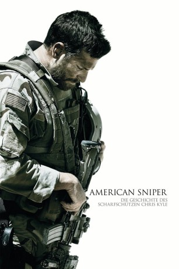

#467 American Sniper
Auszeichnungen: 1 Oscars gewonnen für 5 Oscars nominiert
 gesehen am 16.07.2015
gesehen am 16.07.2015
 
 IMDB-Wertung: 7.3 / 10
IMDB-Wertung: 7.3 / 10  Metascore: 72
Metascore: 72 
US-Navy-SEAL und Scharfschütze Chris Kyle wird mit nur einem einzigen Auftrag in den Irak geschickt, er soll seine Waffenbrüder beschützen. Seine punktgenauen Schüsse retten unzählige Leben auf dem Schlachtfeld. Als sich die Geschichten seiner mutigen Heldentaten und der unvergleichlichen Treffsicherheit verbreiten, bekommt er den Spitznamen „Legend“. Doch sein Ruf eilt ihm auch hinter die feindlichen Linien voraus und die Gegner setzen ein Kopfgeld auf ihn aus. Doch der Krieg ist nicht sein einziger Kampf: Der Scharfschütze versucht auch, ein guter Ehemann und Vater für seine Liebsten am anderen Ende der Welt zu sein. Trotz der lauernden Gefahr und seiner daheim wartenden Familie absolviert Kyle vier Einsätze im Irak – ganz nach dem Motto „lass niemanden zurück“. Aber als er dann wieder bei seiner Frau Taya Renae Kyle und seinen Kinder ist, erkennt er, dass er den Krieg nicht hinter sich lassen kann.
Jahr: 2014
Dauer: 133 Minuten
FSK: 16
Land: USA Studio: Warner Bros.Tonspuren: DD5.1 - ,
Untertitel: Deutsch,
Auflösung: 1080p (1920x800) Größe: 11571 MB
Genre: Action, Biographie, Drama, Geschichte, Thriller, Krieg
Regisseur:  Clint Eastwood
Clint Eastwood
Drehbuch: Jason Hall, Chris Kyle, Scott McEwen, Jim DeFelice
Soundtrack:
Darsteller:
 Bradley Cooper als Chris Kyle
Bradley Cooper als Chris Kyle Kyle Gallner als Goat-Winston
Kyle Gallner als Goat-Winston- Cole Konis als Young Chris Kyle
- Ben Reed als Wayne Kyle
- Elise Robertson als Deby Kyle
- Luke Sunshine als Young Jeff Kyle
- Troy Vincent als Pastor
- Brandon Salgado Telis als Bully
 Keir O'Donnell als Jeff Kyle
Keir O'Donnell als Jeff Kyle- Marnette Patterson als Sarah
- Jason Hall als Cowboy
- Billy Miller als Navy Recruiter
 Leonard Roberts als Instructor Rolle
Leonard Roberts als Instructor Rolle Reynaldo Gallegos als Tony
Reynaldo Gallegos als Tony- Kevin Lacz als Dauber
 Jake McDorman als Biggles
Jake McDorman als Biggles Cory Hardrict als 'D' / Dandridge
Cory Hardrict als 'D' / Dandridge- Eric Ladin als 'Squirrel' / Case
 Sienna Miller als Taya
Sienna Miller als Taya Brando Eaton als Dapper Navy Man
Brando Eaton als Dapper Navy Man- James Ryen als PO Karnan
 Luke Grimes als Marc Lee
Luke Grimes als Marc Lee- Jonathan Kowalsky als 1st Marine #2
 Sammy Sheik als Mustafa
Sammy Sheik als Mustafa- Evan Gamble als JAG Officer #1
- Benjamin Mathes als JAG Officer #2
 Tim Griffin als Colonel Gronski
Tim Griffin als Colonel Gronski- Luis Jose Lopez als Sanchez
- Brian Hallisay als Capt. Gillespie
 Erik Aude als Thompson
Erik Aude als Thompson Navid Negahban als Sheikh Al-Obodi
Navid Negahban als Sheikh Al-Obodi- Fehd Benchemsi als Terp #1
- Eric Close als DIA Agent Snead
 Zack Duhame als Contractor
Zack Duhame als Contractor- Mido Hamada als The Butcher
- Kathe Mazur als Dr. Hallerman
 Sam Jaeger als Navy Seal Lt. Martin
Sam Jaeger als Navy Seal Lt. Martin Chance Kelly als Lt. Col. Jones
Chance Kelly als Lt. Col. Jones- Ryan Sadaghiani als Son
- Ayman Samman als Father
- Assaf Cohen als Terp #2
 Fahim Fazli als Messianic Tribal Leader
Fahim Fazli als Messianic Tribal Leader- Salah Salea als Angry Neighbor
- Hector Bucio als PFC Alvarez
- Aidan McGraw als Young Colton
 Jonathan Groff als Young Vet-Mads
Jonathan Groff als Young Vet-Mads- Melissa Hayden als Receptionist
- Pamela Denise Weaver als Marc Lee's Mom
- Amie Farrell als Marc Lee's Wife
 James D. Dever als Funeral Detail OIC
James D. Dever als Funeral Detail OIC
Datei: X:\2014(A-F)\American Sniper (2014, FSK16, 1920x800).mkv seit 27.02.2015
Festplatte: HD 2013(I-Z)-2014(A-Z)
 Es gibt insgesamt 119 Filme in der Gruppe '2014(A-F)'
Es gibt insgesamt 119 Filme in der Gruppe '2014(A-F)'